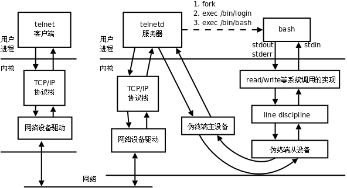

守护进程
[TOC]
终端
在UNIX系统中，用户通过终端登录系统后得到一个Shell进程，这个终端成为Shell进程的控制终端（Controlling Terminal），进程中，控制终端是保存在PCB中的信息，而fork会复制PCB中的信息，因此由Shell进程启动的其它进程的控制终端也是这个终端。默认情况下（没有重定向），每个进程的标准输入、标准输出和标准错误输出都指向控制终端，进程从标准输入读也就是读用户的键盘输入，进程往标准输出或标准错误输出写也就是输出到显示器上。信号中还讲过，在控制终端输入一些特殊的控制键可以给前台进程发信号，例如Ctrl-C表示SIGINT，Ctrl-\表示SIGQUIT。
Ctrl + Alt + F1、F2、F3、F4、F5、F6 字符终端
pts (pseudo terminal slave) 指伪终端。
Alt + F7 图形终端
SSH、Telnet... 网络终端
终端的启动流程：
文件与I/O中讲过，每个进程都可以通过一个特殊的设备文件/dev/tty访问它的控制终端。事实上每个终端设备都对应一个不同的设备文件，/dev/tty提供了一个通用的接口，一个进程要访问它的控制终端既可以通过/dev/tty也可以通过该终端设备所对应的设备文件来访问。ttyname函数可以由文件描述符查出对应的文件名，该文件描述符必须指向一个终端设备而不能是任意文件。
简单来说，一个Linux系统启动，大致经历如下的步骤：
init --> fork --> exec --> getty --> 用户输入帐号 --> login --> 输入密码 --> exec --> bash
硬件驱动程序负责读写实际的硬件设备，比如从键盘读入字符和把字符输出到显示器，线路规程像一个过滤器，对于某些特殊字符并不是让它直接通过，而是做特殊处理，比如在键盘上按下Ctrl-z，对应的字符并不会被用户程序的read读到，而是被线路规程截获，解释成SIGTSTP信号发给前台进程，通常会使该进程停止。线路规程应该过滤哪些字符和做哪些特殊处理是可以配置的。
 {width="2.53125in" height="2.7916666666666665in"}
{width="2.53125in" height="2.7916666666666665in"}
line disciline: 线路规程，用来过滤键盘输入的内容。
ttyname函数
由文件描述符查出对应的设备文件名
char *ttyname(int fd); 成功：终端名； 失败：NULL，设置errno
下面我们借助ttyname函数，通过实验看一下各种不同的终端所对应的设备文件名。【ttyname.c】
#include <unistd.h> #include <stdio.h> int main(void){ printf("fd 0: %s\n", ttyname(0)); printf("fd 1: %s\n", ttyname(1)); printf("fd 2: %s\n", ttyname(2)); return 0;}
网络终端：
虚拟终端或串口终端的数目是有限的，虚拟终端(字符控制终端)一般就是/dev/tty1∼/dev/tty6六个，串口终端的数目也不超过串口的数目。然而网络终端或图形终端窗口的数目却是不受限制的，这是通过伪终端（Pseudo TTY）实现的。一套伪终端由一个主设备（PTY Master）和一个从设备（PTY Slave）组成。主设备在概念上相当于键盘和显示器，只不过它不是真正的硬件而是一个内核模块，操作它的也不是用户而是另外一个进程。从设备和上面介绍的/dev/tty1这样的终端设备模块类似，只不过它的底层驱动程序不是访问硬件而是访问主设备。网络终端或图形终端窗口的Shell进程以及它启动的其它进程都会认为自己的控制终端是伪终端从设备，例如/dev/pts/0、/dev/pts/1等。下面以telnet为例说明网络登录和使用伪终端的过程。
{width="6.166666666666667in" height="3.3541666666666665in"}
{kind=link}
网络终端
TCP/IP协议栈：在数据包上添加报头。
如果telnet客户端和服务器之间的网络延迟较大，我们会观察到按下一个键之后要过几秒钟才能回显到屏幕上。这说明我们每按一个键telnet客户端都会立刻把该字符发送给服务器，然后这个字符经过伪终端主设备和从设备之后被Shell进程读取，同时回显到伪终端从设备，回显的字符再经过伪终端主设备、telnetd服务器和网络发回给telnet客户端，显示给用户看。也许你会觉得吃惊，但真的是这样：每按一个键都要在网络上走个来回！
进程组
概念和特性
进程组，也称之为作业。BSD于1980年前后向Unix中增加的一个新特性。代表一个或多个进程的集合。每个进程都属于一个进程组。在waitpid函数和kill函数的参数中都曾使用到。操作系统设计的进程组的概念，是为了简化对多个进程的管理。
当父进程，创建子进程的时候，默认子进程与父进程属于同一进程组。进程组ID==第一个进程ID(组长进程)。所以，组长进程标识：其进程组ID==其进程ID
可以使用kill -SIGKILL -进程组ID(负的)来将整个进程组内的进程全部杀死。 【kill_groupprocess.c】
组长进程可以创建一个进程组，创建该进程组中的进程，然后终止。只要进程组中有一个进程存在，进程组就存在，与组长进程是否终止无关。
进程组生存期：进程组创建到最后一个进程离开(终止或转移到另一个进程组)。
一个进程可以为自己或子进程设置进程组ID
进程组操作函数
getpgrp函数
获取当前进程的进程组ID
pid_t getpgrp(void); 总是返回调用者的进程组ID
getpgid函数
获取指定进程的进程组ID
pid_t getpgid(pid_t pid); 成功：0； 失败：-1，设置errno
如果pid = 0，那么该函数作用和getpgrp一样。
练习：查看进程对应的进程组ID 【getpgid.c】
setpgid函数
改变进程默认所属的进程组。通常可用来加入一个现有的进程组或创建一个新进程组。
int setpgid(pid_t pid, pid_t pgid); 成功：0； 失败：-1，设置errno
将参1对应的进程，加入参2对应的进程组中。
注意：
1. 如改变子进程为新的组，应fork后，exec前。
2. 权级问题。非root进程只能改变自己创建的子进程，或有权限操作的进程
练习：修改子进程的进程组ID 【setpgid.c】
会话
一组进程组
创建会话
创建一个会话需要注意以下6点注意事项：
调用创建会话的进程不能是进程组组长，该进程变成新会话首进程(session header)
调用创建会话的进程，成为一个新进程组的组长进程，既是新的会长，也是新的组长。
需有root权限(ubuntu不需要)
新会话丢弃原有的控制终端，该会话没有控制终端
如果该调用进程是组长进程，则出错返回(第一条)
建立新会话时，先调用fork, 父进程终止，子进程调用setsid
getsid函数
获取进程所属的会话ID
pid_t getsid(pid_t pid); 成功：返回调用进程的会话ID； 失败：-1，设置errno
pid为0表示察看当前进程session ID
ps ajx命令查看系统中的进程。参数a表示不仅列当前用户的进程，也列出所有其他用户的进程，参数x表示不仅列有控制终端的进程，也列出所有无控制终端的进程，参数j表示列出与作业控制相关的信息。
组长进程不能成为新会话首进程，新会话首进程必定会成为组长进程。
setsid函数
创建一个会话，并以自己的ID设置进程组ID，同时也是新会话的ID。
pid_t setsid(void); 成功：返回调用进程的会话ID； 失败：-1，设置errno
调用了setsid函数的进程，既是新的会长，也是新的组长。
练习：fork一个子进程，并使其创建一个新会话。查看进程组ID、会话ID前后变化 【session.c】
守护进程
Daemon(精灵)进程，是Linux中的后台服务进程，通常独立于控制终端并且周期性地执行某种任务或等待处理某些发生的事件。一般采用以d结尾的名字。
Linux后台的一些系统服务进程，没有控制终端，不能直接和用户交互。不受用户登录、注销的影响，一直在运行着，他们都是守护进程。如：预读入缓输出机制的实现；ftp服务器；nfs服务器等。
创建守护进程，最关键的一步是调用setsid函数创建一个新的Session，并成为Session Leader。
创建守护进程模型
- 创建子进程，父进程退出 所有工作在子进程中进行形式上脱离了控制终端
- 在子进程中创建新会话 setsid()函数 使子进程完全独立出来，脱离控制
- 改变当前目录为根目录 chdir()函数 防止占用可卸载的文件系统 也可以换成其它路径
- 重设文件权限掩码 umask()函数 防止继承的文件创建屏蔽字拒绝某些权限 增加守护进程灵活性
- 关闭文件描述符 继承的打开文件不会用到，浪费系统资源，无法卸载
- 开始执行守护进程核心工作
守护进程退出处理程序模型 【daemond-session.c】
安装线程man page，命令：sudo apt-get install manpages-posix-dev
安装完成，使用man -k pthread如能看到线程函数列表则表明安装成功。